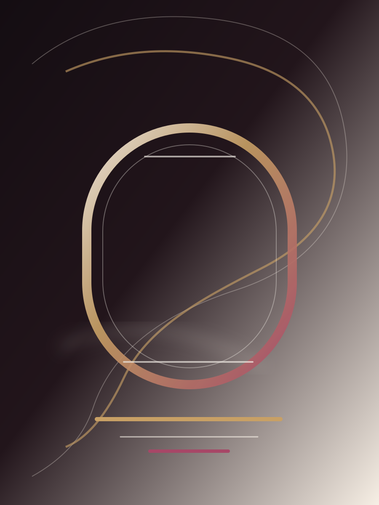
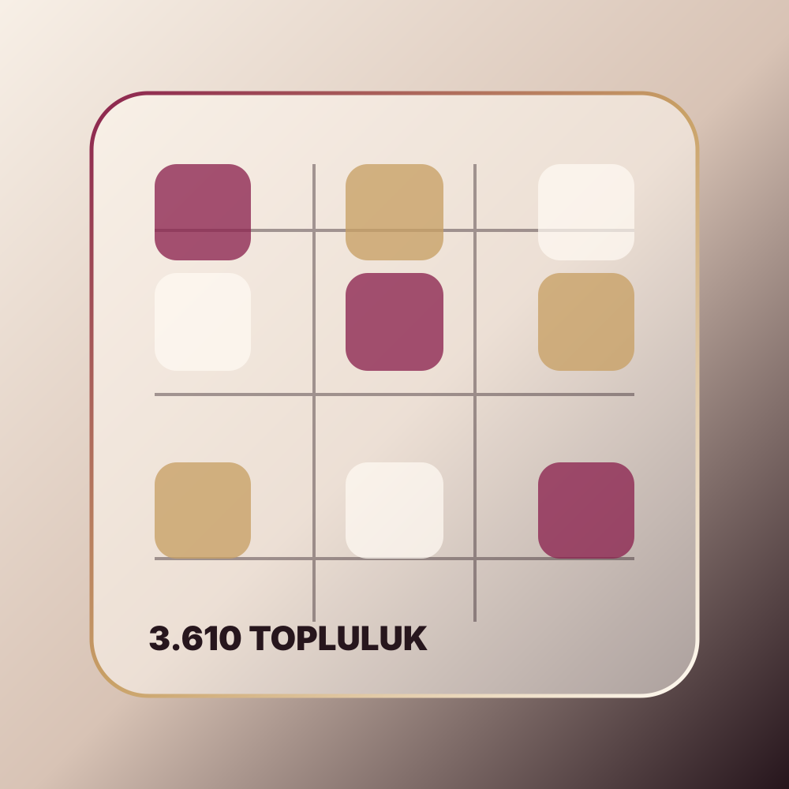

Karşılama
Marka, konum ve randevu aksiyonu ilk ekranda net görünür.
 Pure Shine
Ara
Pure Shine
Ara
Bursa Nilüfer / Lotus Ofis
Nilüfer metro istasyonu yanında, randevuya dönüşen zarif bakım deneyimi.
Saç, cilt bakımı, manikür-pedikür, makyaj ve kişisel bakım hizmetleri için ulaşımı kolay, net ve güven veren bir güzellik rotası.

Bakım Ritüeli
Pure Shine için anlatı; konum güveni, hizmet seçimi, kişiye özel bakım ve son dokunuş sırasıyla kuruldu. Her bölüm ziyaretçinin kararını bir sonraki adıma taşır.
Marka, konum ve randevu aksiyonu ilk ekranda net görünür.
Saç, cilt, tırnak, makyaj ve bakım hizmetleri ayrı modüller gibi açılır.
Premium his gerçek işletme bilgileriyle dengelenir; sahte iddia kurulmaz.
Telefon, Instagram ve yol tarifi karar anında tek yüzeyde buluşur.
Hizmet Haritası
Kesim, renklendirme ve kişisel tarza göre yenilenen görünüm.
Daha temiz, canlı ve dengeli cilt hissi için bakım seansları.
El ve ayak bakımını zarif detaylarla tamamlayan uygulamalar.
Günlük, gece ve özel gün görünümüne uygun makyaj dokunuşları.
Bakım deneyimini rahatlama hissiyle birleştiren tamamlayıcı hizmet.
Randevu öncesi ihtiyaçlara göre netleşen bakım ve güzellik planı.
Nilüfer / Lotus Ofis
Instagram bio ve rehber kayıtlarında öne çıkan ifade aynı noktaya bağlanıyor: Nilüfer metro istasyonu yanı, Lotus Ofis. Bu mesaj web sitesinde özellikle ilk ekran ve randevu finalinde tekrarlandı.
Konak Mah. 1. Badem Sok. No:26
Randevu Finali
Pure Shine için en güçlü dönüşüm yolları telefon, Instagram ve konum. Web sitesinin görevi bu üç yolu gereksiz sürtünme olmadan birleştirmek.
Not: Çalışma saatleri, güncel hizmet detayları ve kampanyalar işletme tarafından onaylandıktan sonra bu alan genişletilmelidir.
@pureshinebeauty
Aktif sosyal varlık, web sitesinde güven sinyaline dönüşür.
Açık Instagram meta verisi; 3.610 takipçi, 139 takip ve 2.039 gönderi gösteriyor. Bu arşiv, onaylı görseller geldikçe web galerisinin ana kaynağına dönüşebilir.

Takipçi
Instagram profilinin açık meta verisinden alınan sosyal sinyal.
Gönderi
Uzun süreli içerik üretimi ve portföy potansiyeli.
Puan
Rehber kaydında 16 yorumla görünen ilk güven göstergesi.